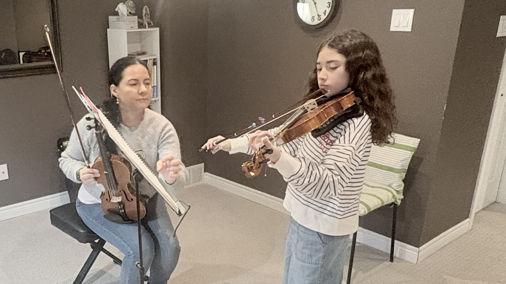
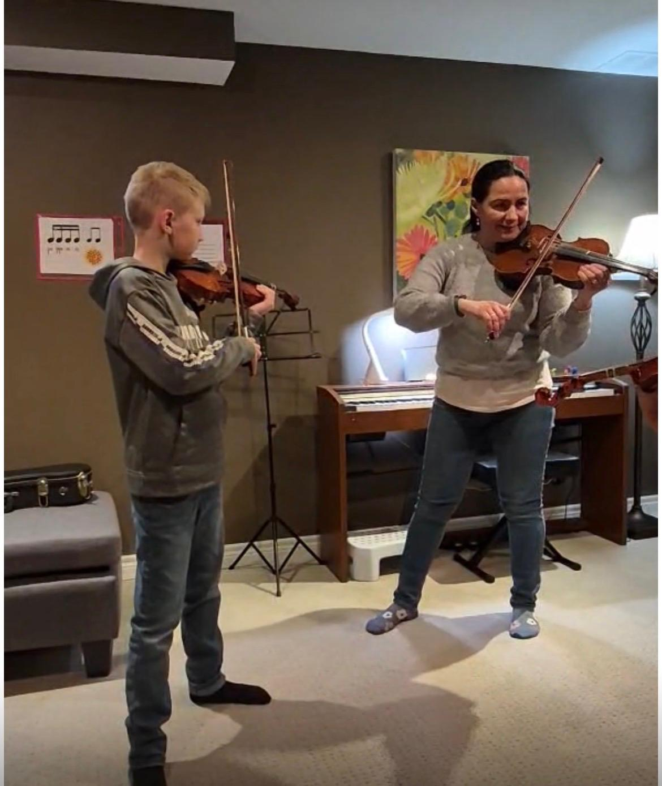

I was born in Ibagué, a city known in Colombia as “The Musical Capital.” My musical journey began at the Conservatory of Tolima, where I was introduced to different orchestral instruments. I was fascinated by all of them, especially the piano and the violin.
Although I initially dreamed of studying piano, life guided me toward the violin, an instrument that became one of the deepest parts of my artistic identity.
Even without having a piano at home, I continued learning thanks to a creative teaching method: practicing on a handmade paper keyboard. That experience taught me that passion, imagination, and guidance can open doors even when resources are limited.
Today, after more than 20 years of teaching and performance experience, I continue sharing music through a patient, creative, and emotionally connected approach.
My musical journey has allowed me to experience a wide range of artistic environments, from children’s choirs and chamber orchestras to symphony orchestras and stage productions.
These experiences shaped the way I understand music: not only as technique and performance, but also as communication, emotion, and human connection.
I believe music education should be inspiring, patient, and adapted to each student’s unique way of learning.
In my classes, I use creative and visual techniques such as colors, rhythm associations, drawings, and interactive exercises to help students develop confidence, musicality, and a genuine enjoyment of music.
For me, teaching music is not only about mastering an instrument, but about helping students connect emotionally with sound, expression, and creativity.